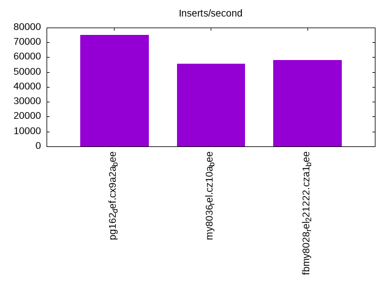
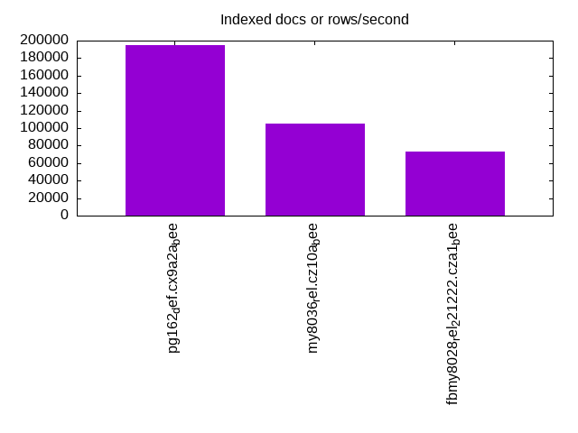
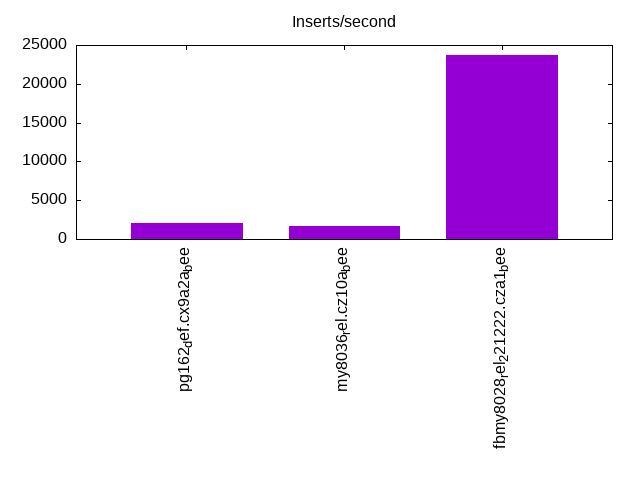
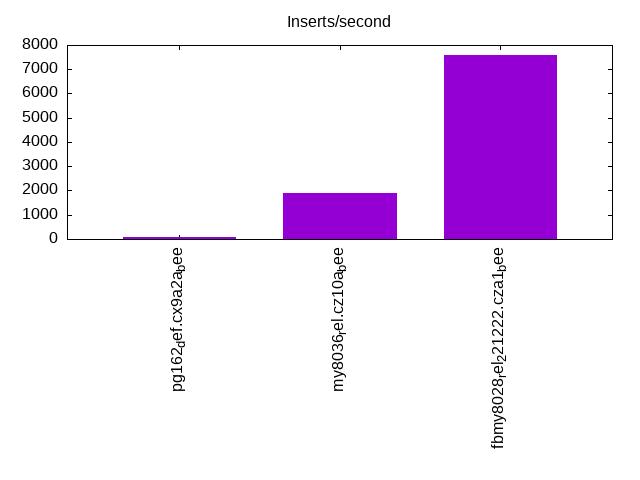
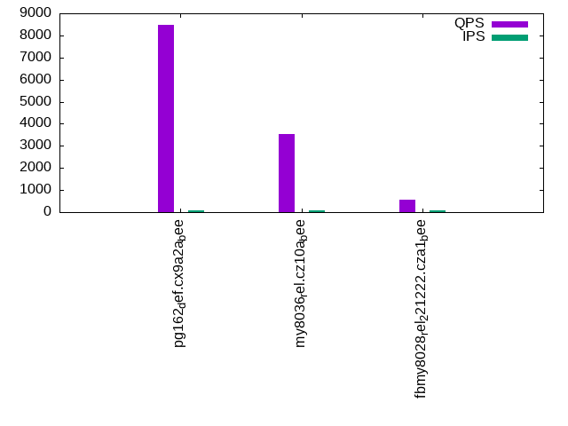
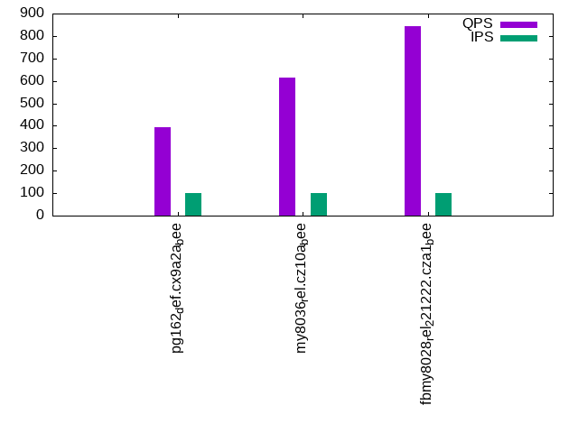
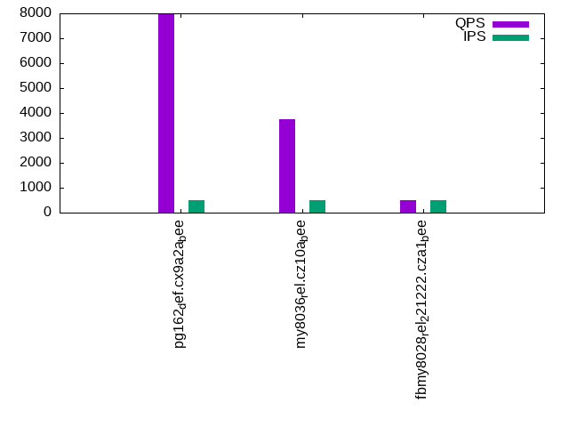
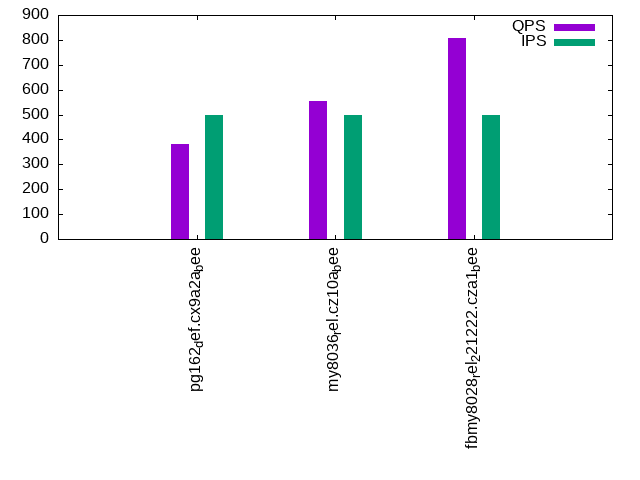
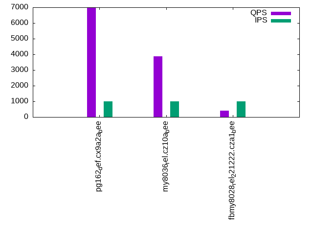
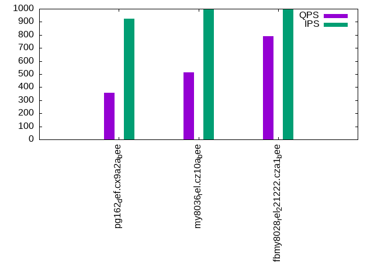

This is a report for the insert benchmark with 800M docs and 1 client(s). It is generated by scripts (bash, awk, sed) and Tufte might not be impressed. An overview of the insert benchmark is here and a short update is here. Below, by DBMS, I mean DBMS+version.config. An example is my8020.c10b40 where my means MySQL, 8020 is version 8.0.20 and c10b40 is the name for the configuration file.
The test server has 8 AMD cores, 16G RAM and an NVMe SSD. It is described here as the Beelink. The benchmark was run with 1 client and there were 1 or 3 connections per client (1 for queries or inserts without rate limits, 1+1 for rate limited inserts+deletes). It uses 1 table. It loads 800M rows per table without secondary indexes, creates 3 secondary indexes per table, then inserts 4m+1m rows per table with a delete per insert to avoid growing the table. It then does 6 read+write tests for 1800s each that do queries as fast as possible with 100,100,500,500,1000,1000 inserts/s and the same for deletes/s per client concurrent with the queries. The database is cached in memory. Clients and the DBMS share one server. The per-database configs are in the per-database subdirectories here.
The tested DBMS are:
The numbers are inserts/s for l.i0, l.i1 and l.i2, indexed docs (or rows) /s for l.x and queries/s for qr100, qp100 thru qr1000, qp1000" The values are the average rate over the entire test for inserts (IPS) and queries (QPS). The range of values for IPS and QPS is split into 3 parts: bottom 25%, middle 50%, top 25%. Values in the bottom 25% have a red background, values in the top 25% have a green background and values in the middle have no color. A gray background is used for values that can be ignored because the DBMS did not sustain the target insert rate. Red backgrounds are not used when the minimum value is within 80% of the max value.
| dbms | l.i0 | l.x | l.i1 | l.i2 | qr100 | qp100 | qr500 | qp500 | qr1000 | qp1000 |
|---|---|---|---|---|---|---|---|---|---|---|
| pg162_def.cx9a2a_bee | 74864 | 194789 | 2068 | 103 | 8484 | 393 | 7964 | 380 | 6980 | 357 |
| my8036_rel.cz10a_bee | 55517 | 105291 | 1720 | 1890 | 3530 | 615 | 3748 | 554 | 3870 | 513 |
| fbmy8028_rel_221222.cza1_bee | 57958 | 73455 | 23669 | 7576 | 565 | 844 | 488 | 808 | 412 | 790 |
This table has relative throughput, throughput for the DBMS relative to the DBMS in the first line, using the absolute throughput from the previous table. Values less than 0.95 have a yellow background. Values greater than 1.05 have a blue background.
| dbms | l.i0 | l.x | l.i1 | l.i2 | qr100 | qp100 | qr500 | qp500 | qr1000 | qp1000 |
|---|---|---|---|---|---|---|---|---|---|---|
| pg162_def.cx9a2a_bee | 1.00 | 1.00 | 1.00 | 1.00 | 1.00 | 1.00 | 1.00 | 1.00 | 1.00 | 1.00 |
| my8036_rel.cz10a_bee | 0.74 | 0.54 | 0.83 | 18.35 | 0.42 | 1.56 | 0.47 | 1.46 | 0.55 | 1.44 |
| fbmy8028_rel_221222.cza1_bee | 0.77 | 0.38 | 11.45 | 73.55 | 0.07 | 2.15 | 0.06 | 2.13 | 0.06 | 2.21 |
This lists the average rate of inserts/s for the tests that do inserts concurrent with queries. For such tests the query rate is listed in the table above. The read+write tests are setup so that the insert rate should match the target rate every second. Cells that are not at least 95% of the target have a red background to indicate a failure to satisfy the target.
| dbms | qr100.L1 | qp100.L2 | qr500.L3 | qp500.L4 | qr1000.L5 | qp1000.L6 |
|---|---|---|---|---|---|---|
| pg162_def.cx9a2a_bee | 100 | 100 | 499 | 499 | 997 | 924 |
| my8036_rel.cz10a_bee | 100 | 100 | 499 | 499 | 997 | 997 |
| fbmy8028_rel_221222.cza1_bee | 100 | 100 | 499 | 499 | 998 | 998 |
| target | 100 | 100 | 500 | 500 | 1000 | 1000 |
l.i0: load without secondary indexes. Graphs for performance per 1-second interval are here.
Average throughput:
Insert response time histogram: each cell has the percentage of responses that take <= the time in the header and max is the max response time in seconds. For the max column values in the top 25% of the range have a red background and in the bottom 25% of the range have a green background. The red background is not used when the min value is within 80% of the max value.
| dbms | 256us | 1ms | 4ms | 16ms | 64ms | 256ms | 1s | 4s | 16s | gt | max |
|---|---|---|---|---|---|---|---|---|---|---|---|
| pg162_def.cx9a2a_bee | 99.998 | 0.001 | nonzero | nonzero | 0.080 | ||||||
| my8036_rel.cz10a_bee | 99.409 | 0.440 | 0.148 | 0.003 | 0.097 | ||||||
| fbmy8028_rel_221222.cza1_bee | 99.725 | 0.194 | 0.077 | 0.004 | 0.135 |
Performance metrics for the DBMS listed above. Some are normalized by throughput, others are not. Legend for results is here.
ips qps rps rmbps wps wmbps rpq rkbpq wpi wkbpi csps cpups cspq cpupq dbgb1 dbgb2 rss maxop p50 p99 tag 74864 0 32 0.3 107.6 30.7 0.000 0.003 0.001 0.420 9095 23.0 0.121 25 76.5 116.6 1.5 0.080 75020 73014 pg162_def.cx9a2a_bee 55517 0 0 0.0 341.1 21.1 0.000 0.000 0.006 0.389 6636 20.2 0.120 29 52.4 69.0 11.1 0.097 55691 49844 my8036_rel.cz10a_bee 57958 0 0 0.0 44.5 13.2 0.000 0.000 0.001 0.234 6230 22.7 0.107 31 23.0 23.8 2.0 0.135 58144 50044 fbmy8028_rel_221222.cza1_bee
l.x: create secondary indexes.
Average throughput:
Performance metrics for the DBMS listed above. Some are normalized by throughput, others are not. Legend for results is here.
ips qps rps rmbps wps wmbps rpq rkbpq wpi wkbpi csps cpups cspq cpupq dbgb1 dbgb2 rss maxop p50 p99 tag 194789 0 590 73.2 200.2 72.6 0.003 0.385 0.001 0.382 387 12.4 0.002 5 153.6 193.7 10.2 0.005 NA NA pg162_def.cx9a2a_bee 105291 0 1764 167.1 2145.2 150.6 0.017 1.625 0.020 1.465 8696 43.7 0.083 33 120.7 137.3 11.3 0.004 NA NA my8036_rel.cz10a_bee 73455 0 97 15.0 30.6 11.2 0.001 0.209 0.000 0.156 407 11.6 0.006 13 50.9 51.7 10.3 0.003 NA NA fbmy8028_rel_221222.cza1_bee
l.i1: continue load after secondary indexes created with 50 inserts per transaction. Graphs for performance per 1-second interval are here.
Average throughput:
Insert response time histogram: each cell has the percentage of responses that take <= the time in the header and max is the max response time in seconds. For the max column values in the top 25% of the range have a red background and in the bottom 25% of the range have a green background. The red background is not used when the min value is within 80% of the max value.
| dbms | 256us | 1ms | 4ms | 16ms | 64ms | 256ms | 1s | 4s | 16s | gt | max |
|---|---|---|---|---|---|---|---|---|---|---|---|
| pg162_def.cx9a2a_bee | 97.575 | 2.425 | 0.061 | ||||||||
| my8036_rel.cz10a_bee | 17.212 | 77.422 | 5.365 | 0.247 | |||||||
| fbmy8028_rel_221222.cza1_bee | 99.625 | 0.351 | 0.020 | 0.004 | 0.103 |
Delete response time histogram: each cell has the percentage of responses that take <= the time in the header and max is the max response time in seconds. For the max column values in the top 25% of the range have a red background and in the bottom 25% of the range have a green background. The red background is not used when the min value is within 80% of the max value.
| dbms | 256us | 1ms | 4ms | 16ms | 64ms | 256ms | 1s | 4s | 16s | gt | max |
|---|---|---|---|---|---|---|---|---|---|---|---|
| pg162_def.cx9a2a_bee | 0.305 | 5.550 | 30.056 | 64.089 | 0.045 | ||||||
| my8036_rel.cz10a_bee | 46.030 | 53.601 | 0.364 | 0.005 | 0.115 | ||||||
| fbmy8028_rel_221222.cza1_bee | 99.585 | 0.374 | 0.037 | 0.004 | 0.098 |
Performance metrics for the DBMS listed above. Some are normalized by throughput, others are not. Legend for results is here.
ips qps rps rmbps wps wmbps rpq rkbpq wpi wkbpi csps cpups cspq cpupq dbgb1 dbgb2 rss maxop p50 p99 tag 2068 0 3443 27.3 3497.6 50.5 1.665 13.493 1.691 25.004 8065 15.3 3.900 592 154.3 194.3 9.4 0.061 1698 1148 pg162_def.cx9a2a_bee 1720 0 8866 138.5 13290.3 368.8 5.156 82.496 7.729 219.617 55995 23.0 32.563 1070 149.5 166.3 10.7 0.247 1648 899 my8036_rel.cz10a_bee 23669 0 140 0.8 187.1 62.3 0.006 0.033 0.008 2.694 11220 48.7 0.474 165 51.7 53.4 8.5 0.103 23931 20877 fbmy8028_rel_221222.cza1_bee
l.i2: continue load after secondary indexes created with 5 inserts per transaction. Graphs for performance per 1-second interval are here.
Average throughput:
Insert response time histogram: each cell has the percentage of responses that take <= the time in the header and max is the max response time in seconds. For the max column values in the top 25% of the range have a red background and in the bottom 25% of the range have a green background. The red background is not used when the min value is within 80% of the max value.
| dbms | 256us | 1ms | 4ms | 16ms | 64ms | 256ms | 1s | 4s | 16s | gt | max |
|---|---|---|---|---|---|---|---|---|---|---|---|
| pg162_def.cx9a2a_bee | 0.005 | 98.879 | 1.099 | 0.017 | 0.034 | ||||||
| my8036_rel.cz10a_bee | 2.492 | 91.249 | 5.647 | 0.609 | 0.003 | 0.103 | |||||
| fbmy8028_rel_221222.cza1_bee | 99.803 | 0.106 | 0.081 | 0.010 | 0.001 | 0.064 |
Delete response time histogram: each cell has the percentage of responses that take <= the time in the header and max is the max response time in seconds. For the max column values in the top 25% of the range have a red background and in the bottom 25% of the range have a green background. The red background is not used when the min value is within 80% of the max value.
| dbms | 256us | 1ms | 4ms | 16ms | 64ms | 256ms | 1s | 4s | 16s | gt | max |
|---|---|---|---|---|---|---|---|---|---|---|---|
| pg162_def.cx9a2a_bee | 99.999 | 0.001 | 0.089 | ||||||||
| my8036_rel.cz10a_bee | 13.338 | 86.032 | 0.580 | 0.049 | 0.001 | 0.103 | |||||
| fbmy8028_rel_221222.cza1_bee | 99.701 | 0.204 | 0.084 | 0.010 | 0.001 | 0.086 |
Performance metrics for the DBMS listed above. Some are normalized by throughput, others are not. Legend for results is here.
ips qps rps rmbps wps wmbps rpq rkbpq wpi wkbpi csps cpups cspq cpupq dbgb1 dbgb2 rss maxop p50 p99 tag 103 0 165 1.3 219.9 3.3 1.606 13.033 2.137 32.447 989 12.4 9.616 9640 154.5 186.7 10.1 0.034 100 90 pg162_def.cx9a2a_bee 1890 0 8087 126.4 11888.6 317.6 4.278 68.450 6.289 172.058 56350 31.8 29.810 1346 149.5 166.4 10.7 0.103 1854 1633 my8036_rel.cz10a_bee 7576 0 42 0.2 112.2 36.2 0.006 0.029 0.015 4.890 31649 40.4 4.178 427 52.1 52.5 7.4 0.064 7582 6368 fbmy8028_rel_221222.cza1_bee
qr100.L1: range queries with 100 insert/s per client. Graphs for performance per 1-second interval are here.
Average throughput:
Query response time histogram: each cell has the percentage of responses that take <= the time in the header and max is the max response time in seconds. For max values in the top 25% of the range have a red background and in the bottom 25% of the range have a green background. The red background is not used when the min value is within 80% of the max value.
| dbms | 256us | 1ms | 4ms | 16ms | 64ms | 256ms | 1s | 4s | 16s | gt | max |
|---|---|---|---|---|---|---|---|---|---|---|---|
| pg162_def.cx9a2a_bee | 99.919 | 0.080 | nonzero | 0.001 | 0.010 | ||||||
| my8036_rel.cz10a_bee | 49.920 | 50.076 | 0.004 | 0.001 | 0.010 | ||||||
| fbmy8028_rel_221222.cza1_bee | 0.867 | 65.791 | 0.019 | 33.323 | nonzero | 0.049 |
Insert response time histogram: each cell has the percentage of responses that take <= the time in the header and max is the max response time in seconds. For max values in the top 25% of the range have a red background and in the bottom 25% of the range have a green background. The red background is not used when the min value is within 80% of the max value.
| dbms | 256us | 1ms | 4ms | 16ms | 64ms | 256ms | 1s | 4s | 16s | gt | max |
|---|---|---|---|---|---|---|---|---|---|---|---|
| pg162_def.cx9a2a_bee | 51.083 | 48.917 | 0.031 | ||||||||
| my8036_rel.cz10a_bee | 8.750 | 91.250 | 0.045 | ||||||||
| fbmy8028_rel_221222.cza1_bee | 99.472 | 0.472 | 0.056 | 0.023 |
Delete response time histogram: each cell has the percentage of responses that take <= the time in the header and max is the max response time in seconds. For max values in the top 25% of the range have a red background and in the bottom 25% of the range have a green background. The red background is not used when the min value is within 80% of the max value.
| dbms | 256us | 1ms | 4ms | 16ms | 64ms | 256ms | 1s | 4s | 16s | gt | max |
|---|---|---|---|---|---|---|---|---|---|---|---|
| pg162_def.cx9a2a_bee | 23.472 | 76.472 | 0.056 | 0.009 | |||||||
| my8036_rel.cz10a_bee | 99.167 | 0.833 | 0.013 | ||||||||
| fbmy8028_rel_221222.cza1_bee | 99.444 | 0.500 | 0.056 | 0.023 |
Performance metrics for the DBMS listed above. Some are normalized by throughput, others are not. Legend for results is here.
ips qps rps rmbps wps wmbps rpq rkbpq wpi wkbpi csps cpups cspq cpupq dbgb1 dbgb2 rss maxop p50 p99 tag 100 8484 166 1.4 15.2 1.5 0.020 0.164 0.152 15.426 32880 12.7 3.875 120 154.5 190.4 10.1 0.010 8087 7861 pg162_def.cx9a2a_bee 100 3530 579 9.0 626.3 16.5 0.164 2.624 6.282 169.301 16751 14.0 4.745 317 149.5 166.4 10.7 0.010 3500 3262 my8036_rel.cz10a_bee 100 565 8 0.1 4.9 0.7 0.014 0.168 0.050 6.804 2476 12.4 4.383 1756 51.8 52.0 7.4 0.049 560 495 fbmy8028_rel_221222.cza1_bee
qp100.L2: point queries with 100 insert/s per client. Graphs for performance per 1-second interval are here.
Average throughput:
Query response time histogram: each cell has the percentage of responses that take <= the time in the header and max is the max response time in seconds. For max values in the top 25% of the range have a red background and in the bottom 25% of the range have a green background. The red background is not used when the min value is within 80% of the max value.
| dbms | 256us | 1ms | 4ms | 16ms | 64ms | 256ms | 1s | 4s | 16s | gt | max |
|---|---|---|---|---|---|---|---|---|---|---|---|
| pg162_def.cx9a2a_bee | nonzero | 99.725 | 0.275 | 0.010 | |||||||
| my8036_rel.cz10a_bee | 0.105 | 99.656 | 0.238 | 0.001 | 0.041 | ||||||
| fbmy8028_rel_221222.cza1_bee | 15.301 | 84.681 | 0.018 | nonzero | 0.036 |
Insert response time histogram: each cell has the percentage of responses that take <= the time in the header and max is the max response time in seconds. For max values in the top 25% of the range have a red background and in the bottom 25% of the range have a green background. The red background is not used when the min value is within 80% of the max value.
| dbms | 256us | 1ms | 4ms | 16ms | 64ms | 256ms | 1s | 4s | 16s | gt | max |
|---|---|---|---|---|---|---|---|---|---|---|---|
| pg162_def.cx9a2a_bee | 23.111 | 76.889 | 0.027 | ||||||||
| my8036_rel.cz10a_bee | 7.806 | 92.194 | 0.044 | ||||||||
| fbmy8028_rel_221222.cza1_bee | 99.111 | 0.889 | 0.013 |
Delete response time histogram: each cell has the percentage of responses that take <= the time in the header and max is the max response time in seconds. For max values in the top 25% of the range have a red background and in the bottom 25% of the range have a green background. The red background is not used when the min value is within 80% of the max value.
| dbms | 256us | 1ms | 4ms | 16ms | 64ms | 256ms | 1s | 4s | 16s | gt | max |
|---|---|---|---|---|---|---|---|---|---|---|---|
| pg162_def.cx9a2a_bee | 47.139 | 52.861 | 0.011 | ||||||||
| my8036_rel.cz10a_bee | 98.556 | 1.417 | 0.028 | 0.028 | |||||||
| fbmy8028_rel_221222.cza1_bee | 98.944 | 1.056 | 0.013 |
Performance metrics for the DBMS listed above. Some are normalized by throughput, others are not. Legend for results is here.
ips qps rps rmbps wps wmbps rpq rkbpq wpi wkbpi csps cpups cspq cpupq dbgb1 dbgb2 rss maxop p50 p99 tag 100 393 6782 53.5 392.9 4.5 17.241 139.181 3.937 45.785 14823 3.9 37.680 793 154.5 190.4 10.1 0.010 400 336 pg162_def.cx9a2a_bee 100 615 6091 95.2 1132.5 29.1 9.908 158.523 11.348 298.673 17636 5.9 28.685 768 149.5 166.4 10.8 0.041 623 559 my8036_rel.cz10a_bee 100 844 6548 48.6 4.7 0.5 7.762 58.942 0.047 5.335 16519 7.6 19.582 721 51.8 52.1 8.8 0.036 847 799 fbmy8028_rel_221222.cza1_bee
qr500.L3: range queries with 500 insert/s per client. Graphs for performance per 1-second interval are here.
Average throughput:
Query response time histogram: each cell has the percentage of responses that take <= the time in the header and max is the max response time in seconds. For max values in the top 25% of the range have a red background and in the bottom 25% of the range have a green background. The red background is not used when the min value is within 80% of the max value.
| dbms | 256us | 1ms | 4ms | 16ms | 64ms | 256ms | 1s | 4s | 16s | gt | max |
|---|---|---|---|---|---|---|---|---|---|---|---|
| pg162_def.cx9a2a_bee | 99.851 | 0.145 | 0.002 | 0.002 | nonzero | 0.027 | |||||
| my8036_rel.cz10a_bee | 58.375 | 41.616 | 0.008 | 0.001 | nonzero | 0.029 | |||||
| fbmy8028_rel_221222.cza1_bee | 0.531 | 65.818 | 0.151 | 33.498 | 0.001 | 0.063 |
Insert response time histogram: each cell has the percentage of responses that take <= the time in the header and max is the max response time in seconds. For max values in the top 25% of the range have a red background and in the bottom 25% of the range have a green background. The red background is not used when the min value is within 80% of the max value.
| dbms | 256us | 1ms | 4ms | 16ms | 64ms | 256ms | 1s | 4s | 16s | gt | max |
|---|---|---|---|---|---|---|---|---|---|---|---|
| pg162_def.cx9a2a_bee | 81.083 | 18.917 | 0.042 | ||||||||
| my8036_rel.cz10a_bee | 59.933 | 40.067 | 0.047 | ||||||||
| fbmy8028_rel_221222.cza1_bee | 98.461 | 1.494 | 0.044 | 0.024 |
Delete response time histogram: each cell has the percentage of responses that take <= the time in the header and max is the max response time in seconds. For max values in the top 25% of the range have a red background and in the bottom 25% of the range have a green background. The red background is not used when the min value is within 80% of the max value.
| dbms | 256us | 1ms | 4ms | 16ms | 64ms | 256ms | 1s | 4s | 16s | gt | max |
|---|---|---|---|---|---|---|---|---|---|---|---|
| pg162_def.cx9a2a_bee | 98.261 | 1.739 | 0.022 | ||||||||
| my8036_rel.cz10a_bee | 97.583 | 2.400 | 0.017 | 0.017 | |||||||
| fbmy8028_rel_221222.cza1_bee | 96.867 | 3.033 | 0.100 | 0.024 |
Performance metrics for the DBMS listed above. Some are normalized by throughput, others are not. Legend for results is here.
ips qps rps rmbps wps wmbps rpq rkbpq wpi wkbpi csps cpups cspq cpupq dbgb1 dbgb2 rss maxop p50 p99 tag 499 7964 883 7.1 615.2 11.1 0.111 0.907 1.234 22.803 32555 14.6 4.088 147 154.6 190.2 9.8 0.027 7770 7275 pg162_def.cx9a2a_bee 499 3748 2934 45.8 3883.9 102.3 0.783 12.522 7.782 209.944 31629 18.8 8.438 401 149.5 166.4 10.8 0.029 3708 3372 my8036_rel.cz10a_bee 499 488 36 0.5 12.4 3.6 0.073 0.989 0.025 7.348 2431 14.2 4.984 2328 52.0 52.4 8.4 0.063 495 400 fbmy8028_rel_221222.cza1_bee
qp500.L4: point queries with 500 insert/s per client. Graphs for performance per 1-second interval are here.
Average throughput:
Query response time histogram: each cell has the percentage of responses that take <= the time in the header and max is the max response time in seconds. For max values in the top 25% of the range have a red background and in the bottom 25% of the range have a green background. The red background is not used when the min value is within 80% of the max value.
| dbms | 256us | 1ms | 4ms | 16ms | 64ms | 256ms | 1s | 4s | 16s | gt | max |
|---|---|---|---|---|---|---|---|---|---|---|---|
| pg162_def.cx9a2a_bee | 99.019 | 0.981 | 0.001 | 0.032 | |||||||
| my8036_rel.cz10a_bee | 0.004 | 98.923 | 0.968 | 0.106 | 0.053 | ||||||
| fbmy8028_rel_221222.cza1_bee | 11.331 | 88.633 | 0.036 | nonzero | 0.061 |
Insert response time histogram: each cell has the percentage of responses that take <= the time in the header and max is the max response time in seconds. For max values in the top 25% of the range have a red background and in the bottom 25% of the range have a green background. The red background is not used when the min value is within 80% of the max value.
| dbms | 256us | 1ms | 4ms | 16ms | 64ms | 256ms | 1s | 4s | 16s | gt | max |
|---|---|---|---|---|---|---|---|---|---|---|---|
| pg162_def.cx9a2a_bee | 97.789 | 2.211 | 0.042 | ||||||||
| my8036_rel.cz10a_bee | 67.994 | 30.822 | 1.183 | 0.119 | |||||||
| fbmy8028_rel_221222.cza1_bee | 99.489 | 0.511 | 0.014 |
Delete response time histogram: each cell has the percentage of responses that take <= the time in the header and max is the max response time in seconds. For max values in the top 25% of the range have a red background and in the bottom 25% of the range have a green background. The red background is not used when the min value is within 80% of the max value.
| dbms | 256us | 1ms | 4ms | 16ms | 64ms | 256ms | 1s | 4s | 16s | gt | max |
|---|---|---|---|---|---|---|---|---|---|---|---|
| pg162_def.cx9a2a_bee | 17.867 | 82.133 | 0.046 | ||||||||
| my8036_rel.cz10a_bee | 94.750 | 4.917 | 0.333 | 0.051 | |||||||
| fbmy8028_rel_221222.cza1_bee | 99.422 | 0.578 | 0.014 |
Performance metrics for the DBMS listed above. Some are normalized by throughput, others are not. Legend for results is here.
ips qps rps rmbps wps wmbps rpq rkbpq wpi wkbpi csps cpups cspq cpupq dbgb1 dbgb2 rss maxop p50 p99 tag 499 380 7430 58.4 1326.8 16.7 19.527 157.171 2.658 34.352 16199 7.0 42.573 1472 154.7 189.1 8.6 0.032 384 320 pg162_def.cx9a2a_bee 499 554 8251 128.9 4270.4 111.7 14.904 238.463 8.556 229.158 30415 10.7 54.941 1546 149.5 166.4 10.8 0.053 559 527 my8036_rel.cz10a_bee 499 808 6532 49.2 13.1 3.4 8.088 62.413 0.026 6.912 16849 9.6 20.863 951 52.1 52.8 8.6 0.061 815 751 fbmy8028_rel_221222.cza1_bee
qr1000.L5: range queries with 1000 insert/s per client. Graphs for performance per 1-second interval are here.
Average throughput:
Query response time histogram: each cell has the percentage of responses that take <= the time in the header and max is the max response time in seconds. For max values in the top 25% of the range have a red background and in the bottom 25% of the range have a green background. The red background is not used when the min value is within 80% of the max value.
| dbms | 256us | 1ms | 4ms | 16ms | 64ms | 256ms | 1s | 4s | 16s | gt | max |
|---|---|---|---|---|---|---|---|---|---|---|---|
| pg162_def.cx9a2a_bee | 98.003 | 1.985 | 0.007 | 0.004 | nonzero | nonzero | 0.133 | ||||
| my8036_rel.cz10a_bee | 63.786 | 36.198 | 0.015 | 0.001 | nonzero | 0.032 | |||||
| fbmy8028_rel_221222.cza1_bee | 0.190 | 67.602 | 3.795 | 28.409 | 0.003 | nonzero | 0.192 |
Insert response time histogram: each cell has the percentage of responses that take <= the time in the header and max is the max response time in seconds. For max values in the top 25% of the range have a red background and in the bottom 25% of the range have a green background. The red background is not used when the min value is within 80% of the max value.
| dbms | 256us | 1ms | 4ms | 16ms | 64ms | 256ms | 1s | 4s | 16s | gt | max |
|---|---|---|---|---|---|---|---|---|---|---|---|
| pg162_def.cx9a2a_bee | 91.197 | 8.803 | 0.053 | ||||||||
| my8036_rel.cz10a_bee | 87.567 | 12.433 | 0.045 | ||||||||
| fbmy8028_rel_221222.cza1_bee | 99.333 | 0.594 | 0.069 | 0.003 | 0.083 |
Delete response time histogram: each cell has the percentage of responses that take <= the time in the header and max is the max response time in seconds. For max values in the top 25% of the range have a red background and in the bottom 25% of the range have a green background. The red background is not used when the min value is within 80% of the max value.
| dbms | 256us | 1ms | 4ms | 16ms | 64ms | 256ms | 1s | 4s | 16s | gt | max |
|---|---|---|---|---|---|---|---|---|---|---|---|
| pg162_def.cx9a2a_bee | 100.000 | 0.054 | |||||||||
| my8036_rel.cz10a_bee | 96.558 | 3.411 | 0.031 | 0.049 | |||||||
| fbmy8028_rel_221222.cza1_bee | 98.222 | 1.692 | 0.083 | 0.003 | 0.068 |
Performance metrics for the DBMS listed above. Some are normalized by throughput, others are not. Legend for results is here.
ips qps rps rmbps wps wmbps rpq rkbpq wpi wkbpi csps cpups cspq cpupq dbgb1 dbgb2 rss maxop p50 p99 tag 997 6980 1682 13.5 1553.7 23.3 0.241 1.981 1.558 23.939 30638 22.3 4.389 256 154.8 188.2 8.5 0.133 6792 5881 pg162_def.cx9a2a_bee 997 3870 5547 86.7 7630.0 199.8 1.434 22.937 7.651 205.161 48136 24.0 12.439 496 149.5 166.4 10.8 0.032 3850 3148 my8036_rel.cz10a_bee 998 412 197 1.4 22.0 7.5 0.479 3.436 0.022 7.696 2676 16.6 6.499 3225 52.8 53.8 8.3 0.192 416 320 fbmy8028_rel_221222.cza1_bee
qp1000.L6: point queries with 1000 insert/s per client. Graphs for performance per 1-second interval are here.
Average throughput:
Query response time histogram: each cell has the percentage of responses that take <= the time in the header and max is the max response time in seconds. For max values in the top 25% of the range have a red background and in the bottom 25% of the range have a green background. The red background is not used when the min value is within 80% of the max value.
| dbms | 256us | 1ms | 4ms | 16ms | 64ms | 256ms | 1s | 4s | 16s | gt | max |
|---|---|---|---|---|---|---|---|---|---|---|---|
| pg162_def.cx9a2a_bee | 97.610 | 2.387 | 0.003 | 0.038 | |||||||
| my8036_rel.cz10a_bee | 0.001 | 97.884 | 1.922 | 0.194 | 0.056 | ||||||
| fbmy8028_rel_221222.cza1_bee | 8.633 | 91.314 | 0.052 | nonzero | nonzero | 0.102 |
Insert response time histogram: each cell has the percentage of responses that take <= the time in the header and max is the max response time in seconds. For max values in the top 25% of the range have a red background and in the bottom 25% of the range have a green background. The red background is not used when the min value is within 80% of the max value.
| dbms | 256us | 1ms | 4ms | 16ms | 64ms | 256ms | 1s | 4s | 16s | gt | max |
|---|---|---|---|---|---|---|---|---|---|---|---|
| pg162_def.cx9a2a_bee | 97.833 | 2.167 | 0.036 | ||||||||
| my8036_rel.cz10a_bee | 82.747 | 16.672 | 0.581 | 0.117 | |||||||
| fbmy8028_rel_221222.cza1_bee | 99.283 | 0.517 | 0.197 | 0.003 | 0.080 |
Delete response time histogram: each cell has the percentage of responses that take <= the time in the header and max is the max response time in seconds. For max values in the top 25% of the range have a red background and in the bottom 25% of the range have a green background. The red background is not used when the min value is within 80% of the max value.
| dbms | 256us | 1ms | 4ms | 16ms | 64ms | 256ms | 1s | 4s | 16s | gt | max |
|---|---|---|---|---|---|---|---|---|---|---|---|
| pg162_def.cx9a2a_bee | 99.900 | 0.100 | 0.110 | ||||||||
| my8036_rel.cz10a_bee | 95.156 | 4.647 | 0.194 | 0.003 | 0.067 | ||||||
| fbmy8028_rel_221222.cza1_bee | 99.175 | 0.625 | 0.197 | 0.003 | 0.088 |
Performance metrics for the DBMS listed above. Some are normalized by throughput, others are not. Legend for results is here.
ips qps rps rmbps wps wmbps rpq rkbpq wpi wkbpi csps cpups cspq cpupq dbgb1 dbgb2 rss maxop p50 p99 tag 924 357 7954 62.5 2170.9 30.0 22.256 178.932 2.349 33.236 17482 17.3 48.915 3872 155.0 192.6 8.1 0.038 367 304 pg162_def.cx9a2a_bee 997 513 10652 166.4 7782.0 202.3 20.779 332.469 7.809 207.909 45110 16.0 88.003 2497 149.5 166.4 10.8 0.056 511 479 my8036_rel.cz10a_bee 998 790 7100 52.8 29.0 8.8 8.986 68.488 0.029 9.017 18278 14.5 23.134 1468 53.4 54.8 8.7 0.102 799 656 fbmy8028_rel_221222.cza1_bee
l.i0: load without secondary indexes
Performance metrics for all DBMS, not just the ones listed above. Some are normalized by throughput, others are not. Legend for results is here.
ips qps rps rmbps wps wmbps rpq rkbpq wpi wkbpi csps cpups cspq cpupq dbgb1 dbgb2 rss maxop p50 p99 tag 74864 0 32 0.3 107.6 30.7 0.000 0.003 0.001 0.420 9095 23.0 0.121 25 76.5 116.6 1.5 0.080 75020 73014 pg162_def.cx9a2a_bee 55517 0 0 0.0 341.1 21.1 0.000 0.000 0.006 0.389 6636 20.2 0.120 29 52.4 69.0 11.1 0.097 55691 49844 my8036_rel.cz10a_bee 57958 0 0 0.0 44.5 13.2 0.000 0.000 0.001 0.234 6230 22.7 0.107 31 23.0 23.8 2.0 0.135 58144 50044 fbmy8028_rel_221222.cza1_bee
l.x: create secondary indexes
Performance metrics for all DBMS, not just the ones listed above. Some are normalized by throughput, others are not. Legend for results is here.
ips qps rps rmbps wps wmbps rpq rkbpq wpi wkbpi csps cpups cspq cpupq dbgb1 dbgb2 rss maxop p50 p99 tag 194789 0 590 73.2 200.2 72.6 0.003 0.385 0.001 0.382 387 12.4 0.002 5 153.6 193.7 10.2 0.005 NA NA pg162_def.cx9a2a_bee 105291 0 1764 167.1 2145.2 150.6 0.017 1.625 0.020 1.465 8696 43.7 0.083 33 120.7 137.3 11.3 0.004 NA NA my8036_rel.cz10a_bee 73455 0 97 15.0 30.6 11.2 0.001 0.209 0.000 0.156 407 11.6 0.006 13 50.9 51.7 10.3 0.003 NA NA fbmy8028_rel_221222.cza1_bee
l.i1: continue load after secondary indexes created with 50 inserts per transaction
Performance metrics for all DBMS, not just the ones listed above. Some are normalized by throughput, others are not. Legend for results is here.
ips qps rps rmbps wps wmbps rpq rkbpq wpi wkbpi csps cpups cspq cpupq dbgb1 dbgb2 rss maxop p50 p99 tag 2068 0 3443 27.3 3497.6 50.5 1.665 13.493 1.691 25.004 8065 15.3 3.900 592 154.3 194.3 9.4 0.061 1698 1148 pg162_def.cx9a2a_bee 1720 0 8866 138.5 13290.3 368.8 5.156 82.496 7.729 219.617 55995 23.0 32.563 1070 149.5 166.3 10.7 0.247 1648 899 my8036_rel.cz10a_bee 23669 0 140 0.8 187.1 62.3 0.006 0.033 0.008 2.694 11220 48.7 0.474 165 51.7 53.4 8.5 0.103 23931 20877 fbmy8028_rel_221222.cza1_bee
l.i2: continue load after secondary indexes created with 5 inserts per transaction
Performance metrics for all DBMS, not just the ones listed above. Some are normalized by throughput, others are not. Legend for results is here.
ips qps rps rmbps wps wmbps rpq rkbpq wpi wkbpi csps cpups cspq cpupq dbgb1 dbgb2 rss maxop p50 p99 tag 103 0 165 1.3 219.9 3.3 1.606 13.033 2.137 32.447 989 12.4 9.616 9640 154.5 186.7 10.1 0.034 100 90 pg162_def.cx9a2a_bee 1890 0 8087 126.4 11888.6 317.6 4.278 68.450 6.289 172.058 56350 31.8 29.810 1346 149.5 166.4 10.7 0.103 1854 1633 my8036_rel.cz10a_bee 7576 0 42 0.2 112.2 36.2 0.006 0.029 0.015 4.890 31649 40.4 4.178 427 52.1 52.5 7.4 0.064 7582 6368 fbmy8028_rel_221222.cza1_bee
qr100.L1: range queries with 100 insert/s per client
Performance metrics for all DBMS, not just the ones listed above. Some are normalized by throughput, others are not. Legend for results is here.
ips qps rps rmbps wps wmbps rpq rkbpq wpi wkbpi csps cpups cspq cpupq dbgb1 dbgb2 rss maxop p50 p99 tag 100 8484 166 1.4 15.2 1.5 0.020 0.164 0.152 15.426 32880 12.7 3.875 120 154.5 190.4 10.1 0.010 8087 7861 pg162_def.cx9a2a_bee 100 3530 579 9.0 626.3 16.5 0.164 2.624 6.282 169.301 16751 14.0 4.745 317 149.5 166.4 10.7 0.010 3500 3262 my8036_rel.cz10a_bee 100 565 8 0.1 4.9 0.7 0.014 0.168 0.050 6.804 2476 12.4 4.383 1756 51.8 52.0 7.4 0.049 560 495 fbmy8028_rel_221222.cza1_bee
qp100.L2: point queries with 100 insert/s per client
Performance metrics for all DBMS, not just the ones listed above. Some are normalized by throughput, others are not. Legend for results is here.
ips qps rps rmbps wps wmbps rpq rkbpq wpi wkbpi csps cpups cspq cpupq dbgb1 dbgb2 rss maxop p50 p99 tag 100 393 6782 53.5 392.9 4.5 17.241 139.181 3.937 45.785 14823 3.9 37.680 793 154.5 190.4 10.1 0.010 400 336 pg162_def.cx9a2a_bee 100 615 6091 95.2 1132.5 29.1 9.908 158.523 11.348 298.673 17636 5.9 28.685 768 149.5 166.4 10.8 0.041 623 559 my8036_rel.cz10a_bee 100 844 6548 48.6 4.7 0.5 7.762 58.942 0.047 5.335 16519 7.6 19.582 721 51.8 52.1 8.8 0.036 847 799 fbmy8028_rel_221222.cza1_bee
qr500.L3: range queries with 500 insert/s per client
Performance metrics for all DBMS, not just the ones listed above. Some are normalized by throughput, others are not. Legend for results is here.
ips qps rps rmbps wps wmbps rpq rkbpq wpi wkbpi csps cpups cspq cpupq dbgb1 dbgb2 rss maxop p50 p99 tag 499 7964 883 7.1 615.2 11.1 0.111 0.907 1.234 22.803 32555 14.6 4.088 147 154.6 190.2 9.8 0.027 7770 7275 pg162_def.cx9a2a_bee 499 3748 2934 45.8 3883.9 102.3 0.783 12.522 7.782 209.944 31629 18.8 8.438 401 149.5 166.4 10.8 0.029 3708 3372 my8036_rel.cz10a_bee 499 488 36 0.5 12.4 3.6 0.073 0.989 0.025 7.348 2431 14.2 4.984 2328 52.0 52.4 8.4 0.063 495 400 fbmy8028_rel_221222.cza1_bee
qp500.L4: point queries with 500 insert/s per client
Performance metrics for all DBMS, not just the ones listed above. Some are normalized by throughput, others are not. Legend for results is here.
ips qps rps rmbps wps wmbps rpq rkbpq wpi wkbpi csps cpups cspq cpupq dbgb1 dbgb2 rss maxop p50 p99 tag 499 380 7430 58.4 1326.8 16.7 19.527 157.171 2.658 34.352 16199 7.0 42.573 1472 154.7 189.1 8.6 0.032 384 320 pg162_def.cx9a2a_bee 499 554 8251 128.9 4270.4 111.7 14.904 238.463 8.556 229.158 30415 10.7 54.941 1546 149.5 166.4 10.8 0.053 559 527 my8036_rel.cz10a_bee 499 808 6532 49.2 13.1 3.4 8.088 62.413 0.026 6.912 16849 9.6 20.863 951 52.1 52.8 8.6 0.061 815 751 fbmy8028_rel_221222.cza1_bee
qr1000.L5: range queries with 1000 insert/s per client
Performance metrics for all DBMS, not just the ones listed above. Some are normalized by throughput, others are not. Legend for results is here.
ips qps rps rmbps wps wmbps rpq rkbpq wpi wkbpi csps cpups cspq cpupq dbgb1 dbgb2 rss maxop p50 p99 tag 997 6980 1682 13.5 1553.7 23.3 0.241 1.981 1.558 23.939 30638 22.3 4.389 256 154.8 188.2 8.5 0.133 6792 5881 pg162_def.cx9a2a_bee 997 3870 5547 86.7 7630.0 199.8 1.434 22.937 7.651 205.161 48136 24.0 12.439 496 149.5 166.4 10.8 0.032 3850 3148 my8036_rel.cz10a_bee 998 412 197 1.4 22.0 7.5 0.479 3.436 0.022 7.696 2676 16.6 6.499 3225 52.8 53.8 8.3 0.192 416 320 fbmy8028_rel_221222.cza1_bee
qp1000.L6: point queries with 1000 insert/s per client
Performance metrics for all DBMS, not just the ones listed above. Some are normalized by throughput, others are not. Legend for results is here.
ips qps rps rmbps wps wmbps rpq rkbpq wpi wkbpi csps cpups cspq cpupq dbgb1 dbgb2 rss maxop p50 p99 tag 924 357 7954 62.5 2170.9 30.0 22.256 178.932 2.349 33.236 17482 17.3 48.915 3872 155.0 192.6 8.1 0.038 367 304 pg162_def.cx9a2a_bee 997 513 10652 166.4 7782.0 202.3 20.779 332.469 7.809 207.909 45110 16.0 88.003 2497 149.5 166.4 10.8 0.056 511 479 my8036_rel.cz10a_bee 998 790 7100 52.8 29.0 8.8 8.986 68.488 0.029 9.017 18278 14.5 23.134 1468 53.4 54.8 8.7 0.102 799 656 fbmy8028_rel_221222.cza1_bee
Insert response time histogram
256us 1ms 4ms 16ms 64ms 256ms 1s 4s 16s gt max tag 0.000 0.000 99.998 0.001 nonzero nonzero 0.000 0.000 0.000 0.000 0.080 pg162_def.cx9a2a_bee 0.000 0.000 99.409 0.440 0.148 0.003 0.000 0.000 0.000 0.000 0.097 my8036_rel.cz10a_bee 0.000 0.000 99.725 0.194 0.077 0.004 0.000 0.000 0.000 0.000 0.135 fbmy8028_rel_221222.cza1_bee
TODO - determine whether there is data for create index response time
Insert response time histogram
256us 1ms 4ms 16ms 64ms 256ms 1s 4s 16s gt max tag 0.000 0.000 0.000 97.575 2.425 0.000 0.000 0.000 0.000 0.000 0.061 pg162_def.cx9a2a_bee 0.000 0.000 0.000 17.212 77.422 5.365 0.000 0.000 0.000 0.000 0.247 my8036_rel.cz10a_bee 0.000 0.000 99.625 0.351 0.020 0.004 0.000 0.000 0.000 0.000 0.103 fbmy8028_rel_221222.cza1_bee
Delete response time histogram
256us 1ms 4ms 16ms 64ms 256ms 1s 4s 16s gt max tag 0.000 0.305 5.550 30.056 64.089 0.000 0.000 0.000 0.000 0.000 0.045 pg162_def.cx9a2a_bee 0.000 0.000 46.030 53.601 0.364 0.005 0.000 0.000 0.000 0.000 0.115 my8036_rel.cz10a_bee 0.000 0.000 99.585 0.374 0.037 0.004 0.000 0.000 0.000 0.000 0.098 fbmy8028_rel_221222.cza1_bee
Insert response time histogram
256us 1ms 4ms 16ms 64ms 256ms 1s 4s 16s gt max tag 0.000 0.005 98.879 1.099 0.017 0.000 0.000 0.000 0.000 0.000 0.034 pg162_def.cx9a2a_bee 0.000 2.492 91.249 5.647 0.609 0.003 0.000 0.000 0.000 0.000 0.103 my8036_rel.cz10a_bee 0.000 99.803 0.106 0.081 0.010 0.001 0.000 0.000 0.000 0.000 0.064 fbmy8028_rel_221222.cza1_bee
Delete response time histogram
256us 1ms 4ms 16ms 64ms 256ms 1s 4s 16s gt max tag 0.000 0.000 0.000 0.000 99.999 0.001 0.000 0.000 0.000 0.000 0.089 pg162_def.cx9a2a_bee 0.000 13.338 86.032 0.580 0.049 0.001 0.000 0.000 0.000 0.000 0.103 my8036_rel.cz10a_bee 0.000 99.701 0.204 0.084 0.010 0.001 0.000 0.000 0.000 0.000 0.086 fbmy8028_rel_221222.cza1_bee
Query response time histogram
256us 1ms 4ms 16ms 64ms 256ms 1s 4s 16s gt max tag 99.919 0.080 nonzero 0.001 0.000 0.000 0.000 0.000 0.000 0.000 0.010 pg162_def.cx9a2a_bee 49.920 50.076 0.004 0.001 0.000 0.000 0.000 0.000 0.000 0.000 0.010 my8036_rel.cz10a_bee 0.867 65.791 0.019 33.323 nonzero 0.000 0.000 0.000 0.000 0.000 0.049 fbmy8028_rel_221222.cza1_bee
Insert response time histogram
256us 1ms 4ms 16ms 64ms 256ms 1s 4s 16s gt max tag 0.000 0.000 0.000 51.083 48.917 0.000 0.000 0.000 0.000 0.000 0.031 pg162_def.cx9a2a_bee 0.000 0.000 0.000 8.750 91.250 0.000 0.000 0.000 0.000 0.000 0.045 my8036_rel.cz10a_bee 0.000 0.000 99.472 0.472 0.056 0.000 0.000 0.000 0.000 0.000 0.023 fbmy8028_rel_221222.cza1_bee
Delete response time histogram
256us 1ms 4ms 16ms 64ms 256ms 1s 4s 16s gt max tag 0.000 23.472 76.472 0.056 0.000 0.000 0.000 0.000 0.000 0.000 0.009 pg162_def.cx9a2a_bee 0.000 0.000 99.167 0.833 0.000 0.000 0.000 0.000 0.000 0.000 0.013 my8036_rel.cz10a_bee 0.000 0.000 99.444 0.500 0.056 0.000 0.000 0.000 0.000 0.000 0.023 fbmy8028_rel_221222.cza1_bee
Query response time histogram
256us 1ms 4ms 16ms 64ms 256ms 1s 4s 16s gt max tag 0.000 nonzero 99.725 0.275 0.000 0.000 0.000 0.000 0.000 0.000 0.010 pg162_def.cx9a2a_bee 0.000 0.105 99.656 0.238 0.001 0.000 0.000 0.000 0.000 0.000 0.041 my8036_rel.cz10a_bee 0.000 15.301 84.681 0.018 nonzero 0.000 0.000 0.000 0.000 0.000 0.036 fbmy8028_rel_221222.cza1_bee
Insert response time histogram
256us 1ms 4ms 16ms 64ms 256ms 1s 4s 16s gt max tag 0.000 0.000 0.000 23.111 76.889 0.000 0.000 0.000 0.000 0.000 0.027 pg162_def.cx9a2a_bee 0.000 0.000 0.000 7.806 92.194 0.000 0.000 0.000 0.000 0.000 0.044 my8036_rel.cz10a_bee 0.000 0.000 99.111 0.889 0.000 0.000 0.000 0.000 0.000 0.000 0.013 fbmy8028_rel_221222.cza1_bee
Delete response time histogram
256us 1ms 4ms 16ms 64ms 256ms 1s 4s 16s gt max tag 0.000 0.000 47.139 52.861 0.000 0.000 0.000 0.000 0.000 0.000 0.011 pg162_def.cx9a2a_bee 0.000 0.000 98.556 1.417 0.028 0.000 0.000 0.000 0.000 0.000 0.028 my8036_rel.cz10a_bee 0.000 0.000 98.944 1.056 0.000 0.000 0.000 0.000 0.000 0.000 0.013 fbmy8028_rel_221222.cza1_bee
Query response time histogram
256us 1ms 4ms 16ms 64ms 256ms 1s 4s 16s gt max tag 99.851 0.145 0.002 0.002 nonzero 0.000 0.000 0.000 0.000 0.000 0.027 pg162_def.cx9a2a_bee 58.375 41.616 0.008 0.001 nonzero 0.000 0.000 0.000 0.000 0.000 0.029 my8036_rel.cz10a_bee 0.531 65.818 0.151 33.498 0.001 0.000 0.000 0.000 0.000 0.000 0.063 fbmy8028_rel_221222.cza1_bee
Insert response time histogram
256us 1ms 4ms 16ms 64ms 256ms 1s 4s 16s gt max tag 0.000 0.000 0.000 81.083 18.917 0.000 0.000 0.000 0.000 0.000 0.042 pg162_def.cx9a2a_bee 0.000 0.000 0.000 59.933 40.067 0.000 0.000 0.000 0.000 0.000 0.047 my8036_rel.cz10a_bee 0.000 0.000 98.461 1.494 0.044 0.000 0.000 0.000 0.000 0.000 0.024 fbmy8028_rel_221222.cza1_bee
Delete response time histogram
256us 1ms 4ms 16ms 64ms 256ms 1s 4s 16s gt max tag 0.000 0.000 0.000 98.261 1.739 0.000 0.000 0.000 0.000 0.000 0.022 pg162_def.cx9a2a_bee 0.000 0.000 97.583 2.400 0.017 0.000 0.000 0.000 0.000 0.000 0.017 my8036_rel.cz10a_bee 0.000 0.000 96.867 3.033 0.100 0.000 0.000 0.000 0.000 0.000 0.024 fbmy8028_rel_221222.cza1_bee
Query response time histogram
256us 1ms 4ms 16ms 64ms 256ms 1s 4s 16s gt max tag 0.000 0.000 99.019 0.981 0.001 0.000 0.000 0.000 0.000 0.000 0.032 pg162_def.cx9a2a_bee 0.000 0.004 98.923 0.968 0.106 0.000 0.000 0.000 0.000 0.000 0.053 my8036_rel.cz10a_bee 0.000 11.331 88.633 0.036 nonzero 0.000 0.000 0.000 0.000 0.000 0.061 fbmy8028_rel_221222.cza1_bee
Insert response time histogram
256us 1ms 4ms 16ms 64ms 256ms 1s 4s 16s gt max tag 0.000 0.000 0.000 97.789 2.211 0.000 0.000 0.000 0.000 0.000 0.042 pg162_def.cx9a2a_bee 0.000 0.000 0.000 67.994 30.822 1.183 0.000 0.000 0.000 0.000 0.119 my8036_rel.cz10a_bee 0.000 0.000 99.489 0.511 0.000 0.000 0.000 0.000 0.000 0.000 0.014 fbmy8028_rel_221222.cza1_bee
Delete response time histogram
256us 1ms 4ms 16ms 64ms 256ms 1s 4s 16s gt max tag 0.000 0.000 0.000 17.867 82.133 0.000 0.000 0.000 0.000 0.000 0.046 pg162_def.cx9a2a_bee 0.000 0.000 94.750 4.917 0.333 0.000 0.000 0.000 0.000 0.000 0.051 my8036_rel.cz10a_bee 0.000 0.000 99.422 0.578 0.000 0.000 0.000 0.000 0.000 0.000 0.014 fbmy8028_rel_221222.cza1_bee
Query response time histogram
256us 1ms 4ms 16ms 64ms 256ms 1s 4s 16s gt max tag 98.003 1.985 0.007 0.004 nonzero nonzero 0.000 0.000 0.000 0.000 0.133 pg162_def.cx9a2a_bee 63.786 36.198 0.015 0.001 nonzero 0.000 0.000 0.000 0.000 0.000 0.032 my8036_rel.cz10a_bee 0.190 67.602 3.795 28.409 0.003 nonzero 0.000 0.000 0.000 0.000 0.192 fbmy8028_rel_221222.cza1_bee
Insert response time histogram
256us 1ms 4ms 16ms 64ms 256ms 1s 4s 16s gt max tag 0.000 0.000 0.000 91.197 8.803 0.000 0.000 0.000 0.000 0.000 0.053 pg162_def.cx9a2a_bee 0.000 0.000 0.000 87.567 12.433 0.000 0.000 0.000 0.000 0.000 0.045 my8036_rel.cz10a_bee 0.000 0.000 99.333 0.594 0.069 0.003 0.000 0.000 0.000 0.000 0.083 fbmy8028_rel_221222.cza1_bee
Delete response time histogram
256us 1ms 4ms 16ms 64ms 256ms 1s 4s 16s gt max tag 0.000 0.000 0.000 0.000 100.000 0.000 0.000 0.000 0.000 0.000 0.054 pg162_def.cx9a2a_bee 0.000 0.000 96.558 3.411 0.031 0.000 0.000 0.000 0.000 0.000 0.049 my8036_rel.cz10a_bee 0.000 0.000 98.222 1.692 0.083 0.003 0.000 0.000 0.000 0.000 0.068 fbmy8028_rel_221222.cza1_bee
Query response time histogram
256us 1ms 4ms 16ms 64ms 256ms 1s 4s 16s gt max tag 0.000 0.000 97.610 2.387 0.003 0.000 0.000 0.000 0.000 0.000 0.038 pg162_def.cx9a2a_bee 0.000 0.001 97.884 1.922 0.194 0.000 0.000 0.000 0.000 0.000 0.056 my8036_rel.cz10a_bee 0.000 8.633 91.314 0.052 nonzero nonzero 0.000 0.000 0.000 0.000 0.102 fbmy8028_rel_221222.cza1_bee
Insert response time histogram
256us 1ms 4ms 16ms 64ms 256ms 1s 4s 16s gt max tag 0.000 0.000 0.000 97.833 2.167 0.000 0.000 0.000 0.000 0.000 0.036 pg162_def.cx9a2a_bee 0.000 0.000 0.000 82.747 16.672 0.581 0.000 0.000 0.000 0.000 0.117 my8036_rel.cz10a_bee 0.000 0.000 99.283 0.517 0.197 0.003 0.000 0.000 0.000 0.000 0.080 fbmy8028_rel_221222.cza1_bee
Delete response time histogram
256us 1ms 4ms 16ms 64ms 256ms 1s 4s 16s gt max tag 0.000 0.000 0.000 0.000 99.900 0.100 0.000 0.000 0.000 0.000 0.110 pg162_def.cx9a2a_bee 0.000 0.000 95.156 4.647 0.194 0.003 0.000 0.000 0.000 0.000 0.067 my8036_rel.cz10a_bee 0.000 0.000 99.175 0.625 0.197 0.003 0.000 0.000 0.000 0.000 0.088 fbmy8028_rel_221222.cza1_bee